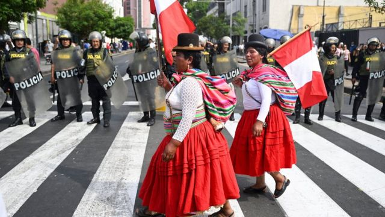
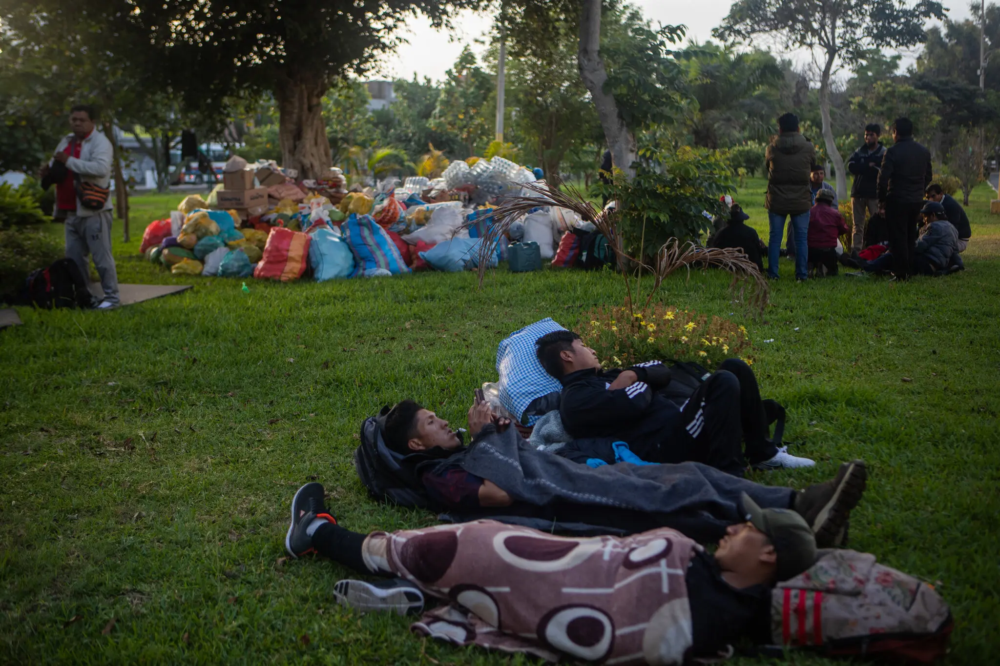
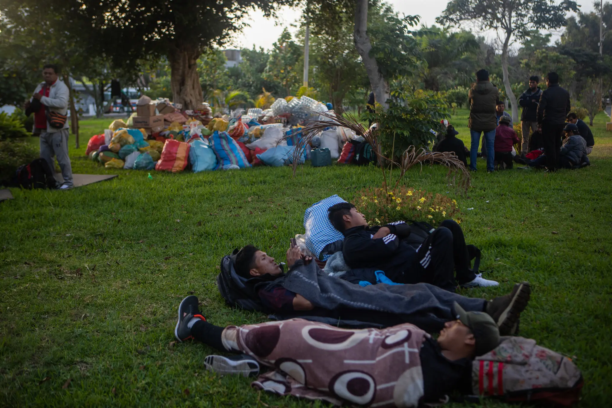

Las protestas en Perú de 2023 corresponde a una serie de movilizaciones realizadas a partir del 4 de enero de 2023 hasta el 5 de marzo de 2023 como continuación, tras un período de tregua, de las protestas que se venían dando en el país desde diciembre de 2022 luego del autogolpe de Estado fallido del presidente Pedro Castillo y su posterior destitución y arresto. Estas fueron convocadas por la Coordinadora Macrorregional del Sur11 —una organización de izquierda conformada por diversos dirigentes de departamentos ubicados al sur del país— en un asamblea realizada el 28 de diciembre de 2022,1213 asamblea donde, además, se acordó exigencias de índole política.14 A esta convocatoria se unieron diversas organizaciones sociales de izquierda.151617 Estas protestas fueron calificadas, por medios como Infobae y Semana Económica, además del exministro del Interior Rubén Vargas, como la «segunda ola»
Marcharon por las calles de la capital de Perú con carteles que decían “No soy terruco” y ondeaban banderas con los colores del arcoíris que están asociados con las comunidades indígenas de los Andes. Muchos corean “asesina” cuando se refieren a la líder del país y cantan himnos sobre no tener más miedo. El jueves, seguían llegando más, y muchos prometieron quedarse para una larga lucha. La semana pasada, miles de peruanos de las zonas rurales llegaron a Lima para unirse a las protestas locales que pedían la renuncia de la presidenta Dina Boluarte, tras la destitución en diciembre del exmandatario del país después de que intentó disolver el Congreso y gobernar por decreto. Las crecientes manifestaciones en la capital continúan luego de siete semanas de protestas nacionales que muestran pocas señales de disminuir. Perú se encuentra en un callejón sin salida mientras el gobierno se enfoca en retratar a los manifestantes como peones de narcotraficantes, mineros ilegales y grupos terroristas que intentan sembrar el caos, según Boluarte. Día a día, parece que las protestas se vuelven más caóticas. El enfrentamiento actual ha incrementado la polarización del país, que se ha visto convulsionado por lo que ya es su conflicto más mortífero de este siglo. Desde que Boluarte asumió el cargo el 7 de diciembre, violentas protestas contra su gobierno han paralizado grandes zonas del sur de Perú, cerrando minas de cobre y estaño y obstruyendo carreteras que conducen a Lima y a pueblos de la Amazonía. Final hours: All of the Times, all in one subscription. Las marchas diarias en Lima, donde vive aproximadamente un tercio de la población del país de 33 millones, han sido relativamente pequeñas pero han crecido a medida que llegan manifestantes de otras regiones, muchos cargados con sacos de granos y papas .
 
